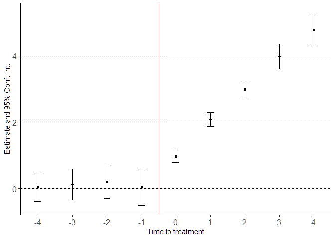

Estimation of staggered Difference-in-Differences using the imputation approach of Borusyak, Jaravel, and Spiess (2021). The packages allows for:
Multiple time periods
Staggered design (i.e., units are treated at different time periods)
Continuous controls
The package implements an imputation method to estimate the treatment effect and pre-trend testing in difference-in-differences designs with staggered adoption (i.e where units are treated at different time periods). Recent literature stress out the importance of not using the standard twoway fixed effect regression.
The standard DiD setup involves two periods and two groups (one treated and one untreated), it relies on parallel trend assumption to estimate the treatment effect of the treated. The staggered DiD setup is the generalization of this approach to multiple periods and multiple groups (i.e. individuals treated at different time periods.). Recent literature stress out the need to not use the standard two-way fixed effect (TWFE) regression to estimate those models. This package implements a method of imputation to estimate the average treatment effect. The package uses untreated observations to predict the counterfactual outcome on treated observations and provide the appropriate Standard errors. It provides ways to test for parallel trends.
Installation
You can install the github version with devtools or renv(recommended, read more about renv)
devtools::install("CdfInnovLab/didImputation")Usage
library(didImputation)
data(did_simulated)
res <- didImputation(y0 = y ~ 0 | i + t,
cohort = 'g',
data = did_simulated)
summary(res)
#> Event Study: imputation method. Dep. Var.: y
#> Counterfactual model: y ~ 0 | i + t
#> Number of cohorts: 5
#> Observations: 1500
#> |-Treated: 630
#> |-Untreated: 870
#> Estimate Std. Error t value Pr(>|t|))
#> k::-4 0.058 0.228 0.256 0.798
#> k::-3 0.124 0.238 0.518 0.605
#> k::-2 0.204 0.257 0.795 0.428
#> k::-1 0.059 0.284 0.208 0.835
#> k::0 0.974 0.097 10.016 <0.001***
#> k::1 2.086 0.110 18.972 <0.001***
#> k::2 2.991 0.143 20.899 <0.001***
#> k::3 3.981 0.189 21.046 <0.001***
#> k::4 4.775 0.259 18.463 <0.001***
#> ---
#> Signif. Code: 0 '***' 0.01 '**' 0.05 '*' 0.1 '' 1
#> Wald stats for pre-trends:
#> Wald (joint nullity): stat = 0.473843, p = 0.754974, on 4 and 860 DoF, VCOV: Clustered (i).You can print the result easily with didplot 
TODO
- Estimation weights
- Triple differences
- Vignette
- Time invariant controls
- Unit invariant controls
- Custom cluster
See also
didimputation: Another implementation using sparse matrix inversion.